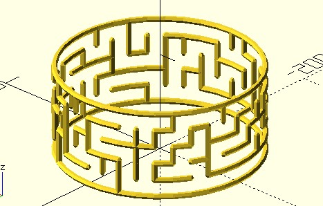
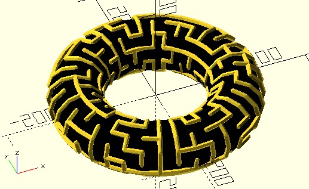

圓柱與環面迷宮
March 17, 2022基於方形迷宮的資料，可以進行許多變化，這是因為不少立體的面，可以展開、變形為方形的面，例如，圓柱的弧面剪開來，就是一張方形的面，而環面可以剪開成為圓柱，再剪開成為方形的面。
圓柱迷宮
方形迷宮的細胞資料中，上牆類型可以畫為弧，為了便於建立弧作為牆，可以先設計一個可以畫立體弧的 arc_wall，可以接受半徑與弧的張角：
module arc_wall(radius, a, wall_thickness) {
half_thickness = wall_thickness / 2;
arc_x = radius * cos(a);
arc_y = radius * sin(a);
polyline_join([[radius, 0, 0], [arc_x, arc_y, 0]]) {
sphere(half_thickness, $fn = 5);
rotate(a)
sphere(half_thickness, $fn = 5);
}
}
雖然稱為 arc_wall，不過其實只是將兩個球 hull 連結為 3D 線段罷了，這是因為在 $fn 較大時，多個弧連接起來，就會像是個圓了，當然，如果你想真正設計個弧形連結也是可以；至於右牆只要在弧的終點畫個垂直於 z 軸的線。
完成一個細胞的上牆與右牆後，接著依細胞資料的 x 資訊計算轉動角度，y 資訊放至對應高度，就可以將牆放到對應的位置。
簡單來說，這就像是將一張方形的紙，彎成圓柱面，不過，方形迷宮的左邊界與右邊界並不互通的話，變成圓柱迷宮後，0 度的地方會有一條從上至下的垂直接合。
dotSCAD 的 mz_square 可以設定 x_wrapping 參數為 true，讓 x 方向的路徑像圓柱接合後可以左右互通，因此想完成圓柱迷宮可以如下撰寫：
use <maze/mz_square.scad>
use <maze/mz_square_get.scad>
use <polyline_join.scad>
$fn = 36;
radius = 100;
layers = 5;
wall_thickness = 6;
cylinder_maze(radius, layers, wall_thickness);
module cylinder_maze(radius, layers, wall_thickness) {
module arc_wall(radius, a, wall_thickness) {
half_thickness = wall_thickness / 2;
arc_x = radius * cos(a);
arc_y = radius * sin(a);
polyline_join([[radius, 0, 0], [arc_x, arc_y, 0]]) {
sphere(half_thickness, $fn = 5);
rotate(a)
sphere(half_thickness, $fn = 5);
}
}
rows = layers;
columns = $fn;
cell_width = 2 * PI * radius / $fn;
a_step = 360 / $fn;
half_thickness = wall_thickness / 2;
cells = mz_square(rows, columns, x_wrapping = true);
for(row = cells, cell = row) {
x = mz_square_get(cell, "x");
y = mz_square_get(cell, "y");
type = mz_square_get(cell, "t");
h = y * cell_width;
a = a_step * x;
rotate(a)
translate([0, 0, h])
// 繪製單一細胞的牆
{
if(type == "TOP_WALL" || type == "TOP_RIGHT_WALL") {
translate([0, 0, cell_width])
arc_wall(radius, a_step, wall_thickness);
}
if(type == "RIGHT_WALL" || type == "TOP_RIGHT_WALL") {
rotate(a_step)
polyline_join([[radius, 0, 0], [radius, 0, cell_width]])
sphere(half_thickness, $fn = 5);
}
}
// 繪製最底層的牆
if(y == 0) {
rotate(a)
arc_wall(radius, a_step, wall_thickness);
}
}
}
這會完成以下的成果：

ptf_bend 函式
自行處理細胞的資料，可以掌握較多的細節，例如，方才程式碼的 arc_wall 中特別旋轉了球的角度，這可以讓每個角度的牆面真的就是繞著圓在轉。
只不過有時不需要這類細節，例如 3D 列印時，某些細節其實也印不出來，牆有沒有真的繞著圓在轉也就不是那麼重要，這時就會想，有沒有更簡單的方式？
其實就平面折彎為圓柱面或弧面，算是蠻常見的需求，為了便於實現此需求，dotSCAD 提供了 ptf_bend 函式，你可以指定原本方形的區域大小、目標圓柱面的半徑、弧面的張角，它可以將指定的平面點座標轉換至弧面的點座標。
記得嗎？mz_squarewalls 可以將迷宮細胞資訊轉換為線的資訊，而每段線就是兩個座標組成的 list，於是就可以完成以下的程式，畫出來的圓柱迷宮不細看，其實與上面的範例圖是很相似的：
use <maze/mz_square.scad>
use <maze/mz_squarewalls.scad>
use <ptf/ptf_bend.scad>
use <polyline_join.scad>
$fn = 36;
radius = 100;
layers = 5;
wall_thickness = 6;
cylinder_maze(radius, layers, wall_thickness);
module cylinder_maze(radius, layers, wall_thickness) {
rows = layers;
columns = $fn;
cell_width = 2 * PI * radius / $fn;
half_thickness = wall_thickness / 2;
size = [columns, rows] * cell_width;
cells = mz_square(rows, columns, x_wrapping = true);
walls = mz_squarewalls(cells, cell_width, left_border = false);
for(wall = walls) {
bended = [for(p = wall) ptf_bend(size, p, radius, 360)];
polyline_join(bended)
sphere(half_thickness, $fn = 5);
}
}
環面迷宮／ptf_torus
方才談到，環面可以剪開成為圓柱，再剪開成為方形的面，將這個過程反過來，套至至平面迷宮，就可以構成環面迷宮。
想將平面迷宮變成環面迷宮，原本的平面迷宮必須左右相通、上下相通，左右相通可以設定 mz_square 可以設定 x_wrapping 參數為 true，上下相通可以設定 y_wrapping 參數為 true。
有興趣的話，可以自行試著推導平面至環境的轉換公式，沒興趣自行推導的話，可以使用 dotSCAD 的 ptf_torus 函式，可以指定原本方形的區域大小、目標環面的大、小半徑、弧面的大小、張角，它可以將指定的平面點座標轉換至環面的點座標。
因此想完成環面迷宮的話，可以撰寫以下的程式碼：
use <maze/mz_square.scad>
use <maze/mz_squarewalls.scad>
use <ptf/ptf_torus.scad>
use <polyline_join.scad>
$fn = 12;
r1 = 100;
r2 = 50;
wall_thickness = 10;
torus_maze(r1, r2, wall_thickness);
module torus_maze(r1, r2, wall_thickness) {
rows = $fn * 3;
columns = $fn;
cell_width = 2 * PI * r1 / $fn;
half_thickness = wall_thickness / 2;
size = [columns, rows] * cell_width;
cells = mz_square(rows, columns, x_wrapping = true, y_wrapping = true);
walls = mz_squarewalls(cells, cell_width, left_border = false);
for(wall = walls) {
bended = [for(p = wall) ptf_torus(size, p, [r1, r2], [360, 360])];
polyline_join(bended)
sphere(half_thickness, $fn = 5);
}
}
color("black")
rotate_extrude()
translate([r1 + r2, 0])
circle(r2);
最後我加上了一個黑色的環，以便於看出環面迷宮：

到這邊應該也可以知道，dotSCAD 為什麼要設計 mz_squarewalls 函式傳回線段資料，而不是一個 mz_squarewalls 模組直接繪製迷宮了吧！
傳回資料就可以利用資料做更多的變化，使用程式進行 3D 建模時，不單是參數化方便，在發現繪模型時，其實可以重用一些運算好的資料，就可以進一步抽取出來，作為其他模型需要的資料來源。